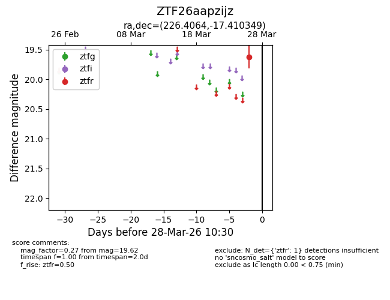
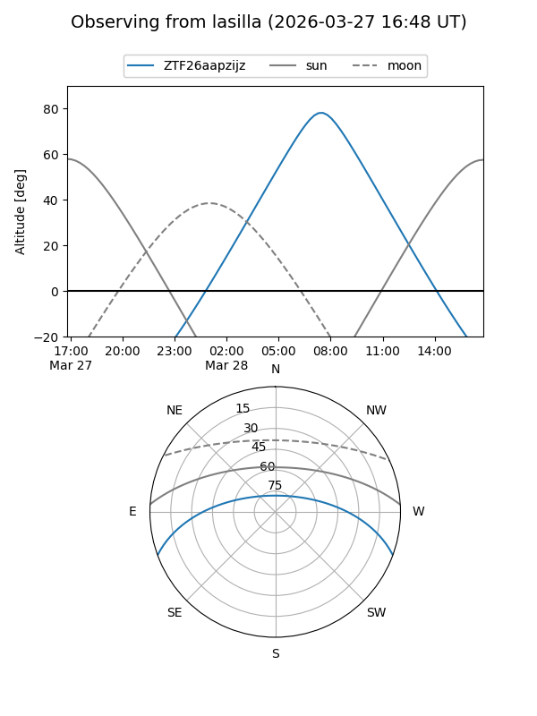
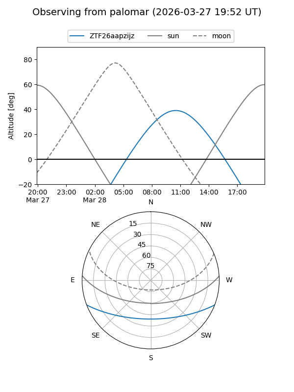

ZTF26aapzijz
Target ZTF26aapzijz at 2026-03-28 10:33
Aliases and brokers:
FINK: link
Lasair: link
ALeRCE: link
alt names
ZTF26aapzijz (ztf,fink_ztf)
Coordinates:
equatorial (ra, dec) = 226.4064,-17.41035
equatorial (HMS+DMS) = 15:05:37.53,-17:24:37.26
galactic (l, b) = (342.9093,+34.84286)
Flags:
Photometry:
last ztfr=19.62
1 ztfr detections
Lightcurve

Visibility


Additional plots